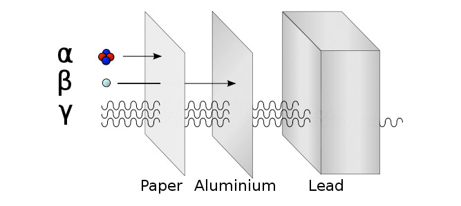

Gamma Waves are a form of electromagnetic wave, which consist of a extremely short wavelength (less than 1 tenth of a nanometer) which are highly energetic.
Image (1): Gamma Waves are depicted as the most energetic type of wave, consisting of extreme short frequency waves.
-Gamma Waves is one of the forms of radiation, being preceeded by Alpha and Beta Particle Radiation.
-Extremely similar to X-rays
-Electromagnetic Radiation, which means it has no mass.
-Capable of indirectly ionizing matter
-Easily pass through objects

Image (2): Movement of Gamma Waves, in comparison to other forms of radiation.
-Named by Ernest Rutherford
-Discovered by Paul Villard in 1905
-Discovered in Paris, was assisted by the research of Pierre and Marie Curie
-Was the third type of radioactive component found, being preceded by Alpha and Beta waves.
Image (3): Two particles colliding with each other, causing the release of gamma waves.
Image (4): A particle and its antiparticle collide, releasing gamma waves.
Image (5): A radioactive isotope goes throgh decay, releasing energy in the form of gamma waves.
Image (6): A magnetic field affects a charged particle, which leads to the release of gamma waves